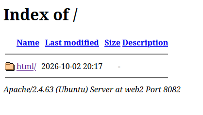

Práctica 2
Para realizar ésta práctica se supone que ya tendréis disponible la máquina virtual con debian mínimo de la práctica 1.
1. Realizar conexión mediante SSH al servidor
Instala en el servidor openssh-server haciendo:
sudo apt update
sudo apt install openssh-server
Para verificar que está funcionando haz sudo systemctl status ssh. Debería aparecer active(running).
Note
En el caso real en el que se trabajaría con un servidor con una ip asignada dentro de la red se hallaría la ip mediante ip a y se conectaría mediante ssh <usuario>@<ip>. En éste caso, hemos establecido que se utilizará NAT, por lo que son redes privadas y el procedimiento es el que se indica a continuación.
Para conectarnos con el servidor desde nuestro equipo haremos ssh <tu_usuario>@127.0.0.1 -p 2222.
2. Configuración básica de Apache
A partir de tener la conexión con el servidor mediante ssh, haremos el resto de pasos desde nuestro local.
1. Instalación de Apache
Hay dos modos de instalar apache: mediante el sistema de paquetes predeterminado de Linux (apt) o descargando su código fuente, descomprimiendo el paquete en /usr/local/src compilándolo y instalándolo.
Por simplicidad haremos la instalación desde apt, pero cambe destacar que la instalación a partir de su código fuente permite la configuración de la misma.
sudo apt update
sudo apt install apache2 -y
Verifica el estado
2. Html de Apache2
Una vez instalado Apache en el servidor, desde nuestro cliente podremos acceder a la web por defecto de Apache accediendo a 127.0.0.1:8080.
La web utiliza /var/www/html como repositorio. Inspecciona el repositorio.
Para que todos los usuarios puedan modificar los archivos de dentro de /var/www/html sin utilizar sudo puedes dar permisos a todos los usuarios con:
sudo chmod 777 –R /var/www/html
!!! note Nota
Recuerda que el al hacer chmod 777 lo que hacemos es dar permisos de Lectura (4) + Escritura (2) + Ejecución (1) = 7 al <propietario><grupo><otros>.
!!! warning IMPORTANTE Esto se puede hacer solo en un entorno de desarrollo. En un entorno de producción nunca asignes permisos completos a todos los usuarios.
3. Configuración de Apache
La configuración de apache se hace en los archivos de texto encontrados en /etc/apache2/.
Inspeccionando los archivos podemos ver la siguiente estructura:
-rw-r--r-- 1 root root 7178 Jun 11 14:28 apache2.conf
drwxr-xr-x 2 root root 4096 Sep 30 12:02 conf-available
drwxr-xr-x 2 root root 4096 Sep 30 12:02 conf-enabled
-rw-r--r-- 1 root root 1782 Jun 11 14:28 envvars
-rw-r--r-- 1 root root 31063 Dec 5 2025 magic
drwxr-xr-x 2 root root 12288 Sep 30 12:02 mods-available
drwxr-xr-x 2 root root 4096 Sep 30 12:02 mods-enabled
-rw-r--r-- 1 root root 274 Jun 11 14:28 ports.conf
drwxr-xr-x 2 root root 4096 Sep 30 12:02 sites-available
drwxr-xr-x 2 root root 4096 Sep 30 12:02 sites-enabled
Archivos de configuración
-
apache2.conf: Es el archivo de configuración principal del servidor. En este archivo se gestionan las rutas, procesos, límites y logs del servidor, además de incluir el resto de archivos.
-
ports.conf: Define los puertos de red y direcciones IP en los que el servidor escucha las peticiones entrantes (por ejemplo, en el puerto
80escucha peticiones HTTP y en el443peticiones HTTPS) -
envvars: Contiene variables de entorno del SO que Apache utiliza al arrancar.
-
magic: Define reglas para que Apache determine el tipo MIME de un archivo analizando solo sus primeros bytes, en lugar de guiarse por su extensión.
Directorios available-enabled
Los directorios dentro de esta carpeta contienen parejas de funcionalidades con el sufijo *-available o *-enabled que tienen como finalidad permitir activar o desactivar sitios web y configuraciones de Apache sin eliminar archivos de configuración.
El funcionamiento es sencillo, en los archivos dentro de *-available guardas todos los archivos de configuración / sitio web etc. y después en el respectivo *-enabled haces un enlace simbólico que apunta a los archivos de *-available que quieres activar.
Los directorios que encontramos són:
-
sites-available/ y sites-enabled/:
- sites-available: Aloja los archivos de cada sitio web o VirtualHost alojado en el servidor
- sites-enabled: Contiene enlaces que apuntan a
sites-availabley activa sitios web con las herramientasa2ensite(Apache 2 Enable Site) ya2dissite(Apache 2 Disable Site).
-
mods-available/ y mods-enabled/: Apache tiene una estructura modular que permite añadir funcionalidades específicas al servidor web a través de módulos. Por ejemplo, si se quiere permitir conexiones seguras mediante HTTPS y gestionar certificados TLS/SSL se tiene el módulo
mod_ssl. Si se quiere reescribir URLs para hacerlas más amigables se tiene el módulomod_rewrite. Si se quiere poder ejecutar archivos.phpdesde el servidor sin necesidad de comunicarse con un programa externo se puede habilitarmod_php, que permite ejecutar el código dinámico utilizando el motor interno de PHP y generando el HTML resultante que envía al usuario.De la misma manera que en
sites-*, en mods-available se tienen las configuraciones de los módulos de apache y en mods-enabled están los enlacs simbólicos que apuntan a mods-enabled. La herramienta que usa esa2enmodya2dismod. -
conf-availble/ y conf-enabled/:
- conf-available: Guarda fragmentos de configuración general que no corresponden directamente a un módulo concreto, como reglas de seguridad globales, páginas de error personalizadas etc.
- conf_enabled: Contiene enlaces simbólicos a conf-available. Se gestiona con
a2enconfya2disconf.
Modifica el archivo /etc/apache2/apache2.conf. Para hacerlo, ántes haz una copia de seguridad (tendrás que usar sudo para poder ejecutar cp y guardarlo como apache2.bak). Después, edita el archivo apache2.conf con sudo nano /etc/apache2/apache2.conf.
Busca las líneas IncludeOptional. Debería aparecer:
IncludeOptional mods-enabled/*.load
IncludeOptional mods-enabled/*.conf
Include ports.conf
mods-enabled/*.load por ejemplo). De ésta manera, si nosotros modificamos el archivo ports.conf, en el archivo apache2.conf se cargará la versión actualizada.
Añadir puertos de escucha.
En ésta sección añadiremos un nuevo puerto de escucha a nuestro servidor, es decir, que además del puerto 80 el servidor recibirá peticiones de otro puerto (en éste caso el 12345)
En tu VM, añade otra regla de redirección de puertos que haga que el puerto 12345 de la MV se pase al puerto 8081 de nuestro equipo en la IP 127.0.0.1 y reinicia la máquina.
Tip
sudo reboot
A continuación, abre el archivo /etc/apache2/ports.conf y añade el puerto 12345 a los puertos de escucha.
Warning
Para aplicar los cambios en cualquier archivo de configuración de apache es necesario reiniciar el servidor. Ésto se puede hacer con:
sudo systemctl reload apache2.
Los cambios en los archivos de repositorio (.html, .php etc.) no requieren reiniciar el servidor.
Si has realizado bien el cambio, aparecerá la misma página que en 127.0.0.1:8080.
Tip
Para verificar el estado de apache2 puedes hacer sudo systemctl status apache2
Cambiar la prioridad de la extensión
El módulo que se encarga de decir qué archivo se debe devolver cuando se hace una petición a un directorio es dir.conf. Si vemos los contenidos de mod-enabled/dir.conf veremos algo así:
DirectoryIndex index.html index.cgi index.pl index.php index.xhtml index.htm
Example
Cuando el usuario hace una petición a http://tudominio.com/tienda/, apache buscará en la carpeta /var/www/html/tienda/ el archivo index.html. Si no encuentra ninguno, entonces devolverá index.cgi, si no encuentra hará index.pl y así sucesivamente. Si modificamos el órden de los archivos y ponemos primero index.php, apache buscará primero el archivo index.php y si no lo encuentra seguirá con el resto.
Danger
La modificación de los archivos dentro de mod-enabled es algo delicado y hay que hacerlo siempre con mucho cuidado.
4. VirtualHosts
Como hemos visto, un servidor web tiene un único repositorio ( /var/www/html ) donde buscar los recursos de los clientes, por lo que un servidor sólo servirá a una aplicación, ya que si ponemos los archivos de dos aplicaciones web diferentes en un mismo repositorio, ¿cómo va a diferenciar el servidor a qué aplicación pertenece qué archivo?
Sin embargo, podemos querer tener múltiples aplicaciones alojadas en el mismo servidor, ya que, si nuestra aplicación web no es demasiado grande, no consumirá todos los recursos del servidor.
Para solucionar ésto, apache permite configurar Virtual Hosts, que básicamente lo que hace es leer la petición de llegada, identificar el nombre de dominio (misitio2.com por ejemplo) o la dirección IP y dirigir al usuario a la carpeta correcta donde se encuentran los archivos de esa aplicación.
La configuración del VirtualHost tiene los siguientes tres pasos: - Configurar el DNS - Crear y editar el archivo de configuración - Activar el host virtual
Configurar DNS
En el entorno de producción, para configurar el DNS tendríamos que acceder a nuestro VPS, ir al Panel de Gestión DNS y crear los Registros DNS necesarios.
En nuestro casso, estamos trabajando con un entorno de desarrollo, por lo que "engañaremos" a nuestro equipo modificando el archivo local de DNS /etc/hosts. Éste archivo consiste en la relación entre:
[IP] <---- [DOMINIO]
Example
Si añadimos la línea: 127.0.0.1 miweb.com Al buscar en el navegador miweb.com la petición irá a 127.0.0.1, que es la url de loopback.
Tip
Puedes usar wget sin descargar los archivos de la web con los tags -qO-.
Por ejemplo, wget -qO- 127.0.0.1:80.
Configuración en Apache
Apache tiene un archivo de configuración de host virtual 000-default.conf dentro de la carpeta sites-available. Para trabajar con el, haremos una copia y luego modificaremos el nuevo archivo. Por ejemplo:
cd /etc/apache2/sites-available
sudo cp 000-default.conf 1-virtualhost.conf
sudo nano 1-virtualhost.conf
El archivo de configuración incluye la configuración del VirtualHost.
<VirtualHost *:80>
# 1. El dominio que vas a escuchar
ServerName miempresa.com
ServerAlias www.miempresa.com
# 2. El email del administrador
ServerAdmin admin@miempresa.com
# 3. La carpeta física donde están los archivos del proyecto
DocumentRoot /var/www/mi-sitio/public
# 4. Logs independientes para este sitio
ErrorLog ${APACHE_LOG_DIR}/mi-sitio-error.log
CustomLog ${APACHE_LOG_DIR}/mi-sitio-access.log combined
</VirtualHost>
Warning
La configuración por defecto de los directorios se encuentra dentro de /etc/apache2/apache.conf. Dentro de los tags <Directory /var/wwww> encontramos la configuración del directorio donde se encuentran los archivos de nuestra web. La opción Indexes lo que hace es que cuando no se encuentre el archivo predeterminado index.html apache mostrará un índice con los archivos del directorio. Ésto puede ser un problema de seguridad.

Para modificar la configuración del directorio únicamente en nuestro VirtualHost manteniendo la configuración global, lo que haremos será añadir al archivo de configuración /etc/apache2/sites-available/1-virtualhost.conf la configuración del directorio eliminando la opción Index. También se puede establecer aquí si el index en el directorio tiene otro nombre con DirectoryIndex
<VirtualHost *:80>
ServerName web1
ServerAlias www.pagina1.com
ServerAdmin webmaster@localhost
DocumentRoot <ruta-al-directorio>
</VirtualHost>
<Directory <ruta-al-directorio>>
Options FollowSymLinks
DirectoryIndex miindex.html
AllowOverride None
Require all granted
</Directory>
Una vez se tiene toda la configuración del VirtualHost, sólo queda activarlo haciendo sudo a2ensite 1-virtualhost.conf y a continuación reiniciar el servicio haciendo service apache2 reload.